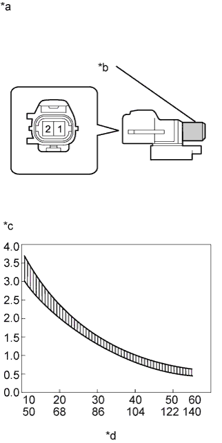

AMBIENT TEMPERATURE SENSOR > INSPECTION |
| 1. INSPECT COOLER THERMISTOR (AMBIENT TEMPERATURE SENSOR) |
|  |
Measure the resistance according to the value(s) in the table below.
| Tester Connection | Condition | Specified Condition |
| 1 - 2 | 10°C (50°F) | 3.00 to 3.73 kΩ |
| 15°C (59°F) | 2.45 to 2.88 kΩ | |
| 20°C (68°F) | 1.95 to 2.30 kΩ | |
| 25°C (77°F) | 1.60 to 1.80 kΩ | |
| 30°C (86°F) | 1.28 to 1.47 kΩ | |
| 35°C (95°F) | 1.00 to 1.22 kΩ | |
| 40°C (104°F) | 0.80 to 1.00 kΩ | |
| 45°C (113°F) | 0.65 to 0.85 kΩ | |
| 50°C (122°F) | 0.50 to 0.70 kΩ | |
| 55°C (131°F) | 0.44 to 0.60 kΩ | |
| 60°C (140°F) | 0.36 to 0.50 kΩ |
| *a | Component without harness connected (Cooler Thermistor (Ambient Temperature Sensor)) |
| *b | Sensor Area |
| *c | Resistance kΩ |
| *d | Temperature °C (°F) |